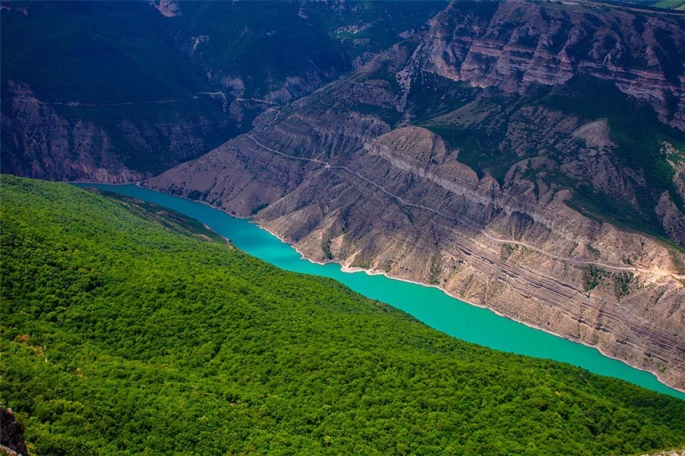
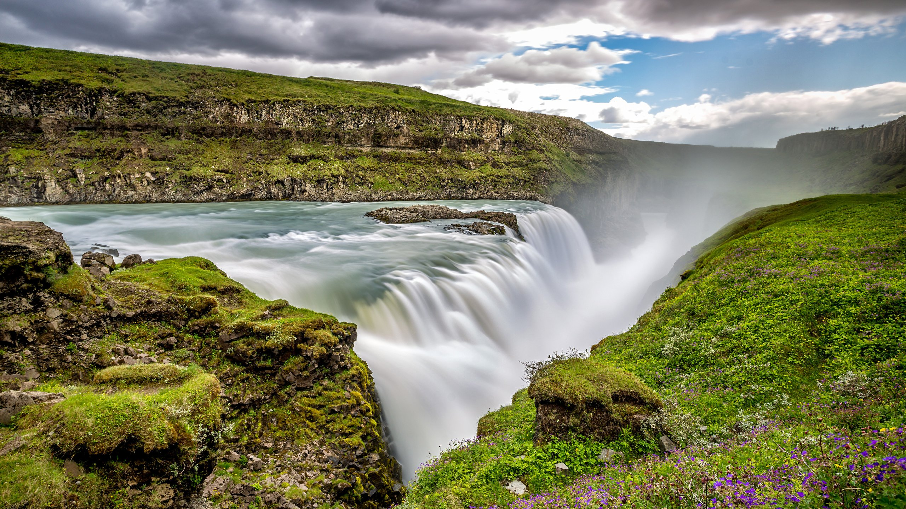
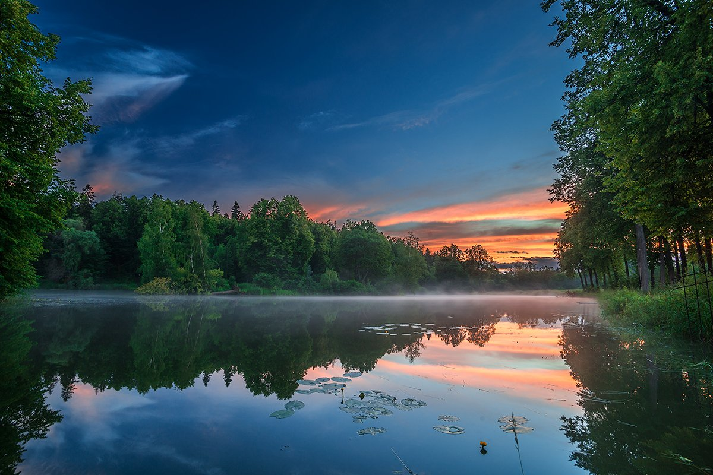

О́стров — участок суши (обычно естественного происхождения) в океане, море, озере или на реке, окружённый со всех сторон водой и постоянно возвышающийся над водой даже в период наибольшего прилива. От материков острова отличаются меньшими размерами.
  